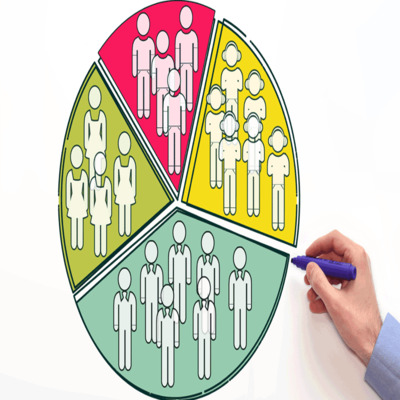
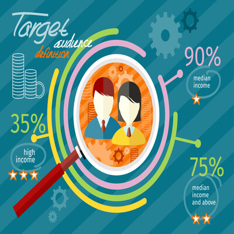
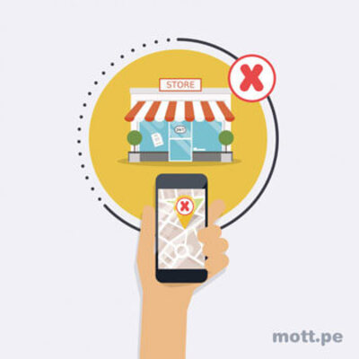

Segmentacion de mercado
Venta de repuestos SENDOPARTS.
Rodrigo Esteban Morán Magaña
Todas las categorias
¿qué es una segmentacion de mercado?
identificacion
suficiencia
estabilidad
accesibilidad


